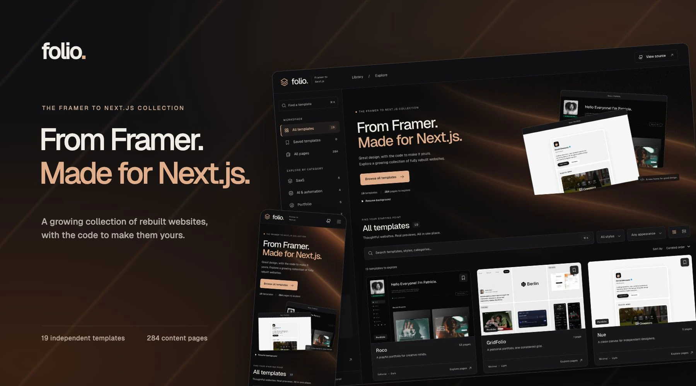
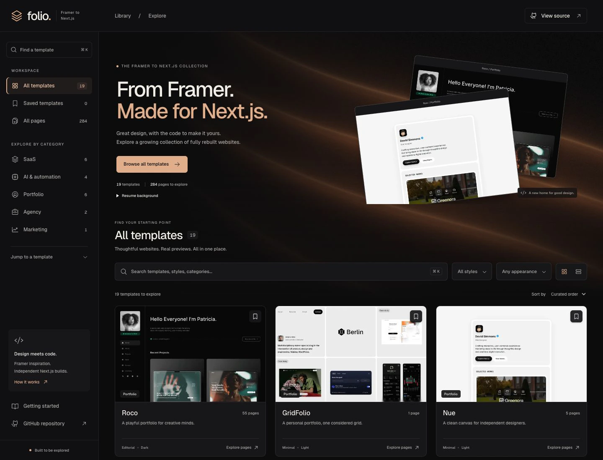
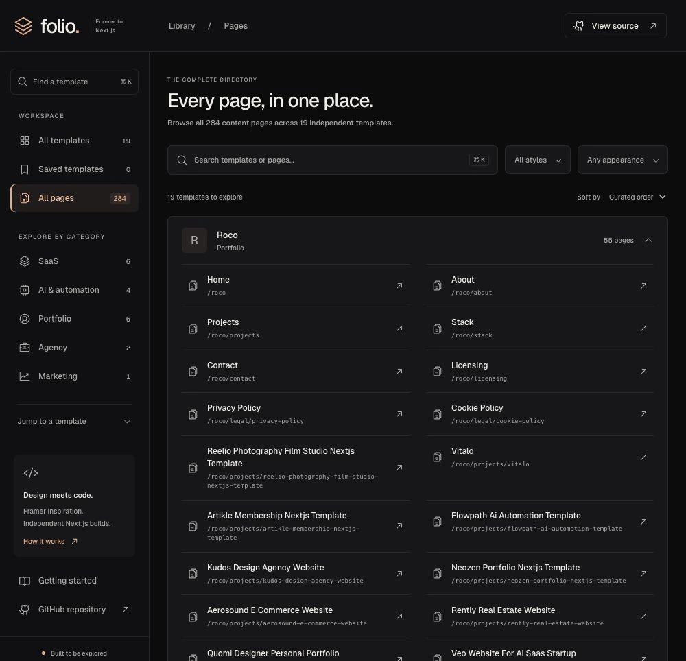
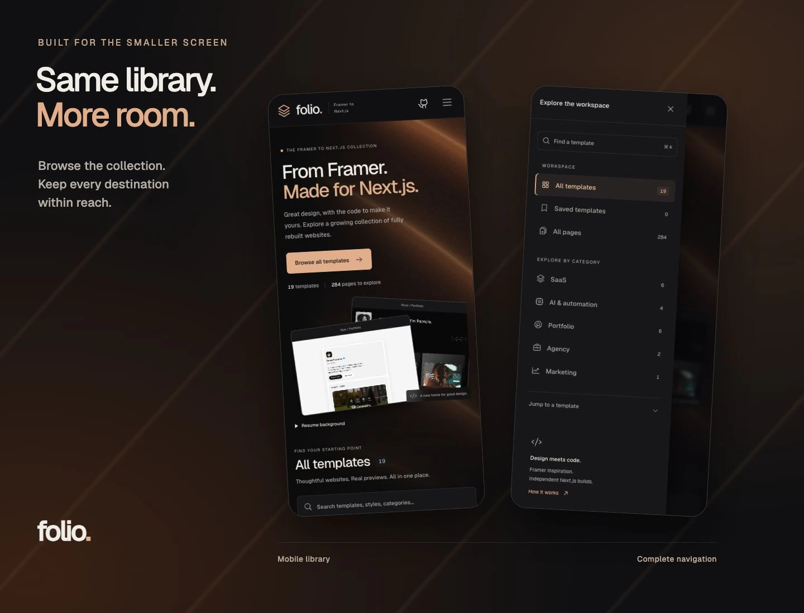

Folio
Folio brings a growing collection of Framer-to-Next.js rebuilds into one workspace. I built the library around real previews, searchable pages, and a consistent sidebar, so exploring a complete website feels as straightforward as finding its homepage.

The idea
As the collection grew, separate previews and long route lists became harder to explore. Folio gives 19 independent Next.js rebuilds and their 284 content pages a shared front door. The original Framer designs are the visual starting point; my focus was rebuilding the websites in Next.js and making the whole collection easy to navigate, including the pages beyond each homepage.

The experience
Search by name, browse five categories, or narrow the library by style and appearance. Grid and list views support different ways of browsing, while saved templates stay in the current browser. Each template opens into a complete page directory with preview and source links. The sidebar becomes a drawer on mobile, and search, filters, and navigation state are reflected in the URL.

How it’s built
Next.js, React, and TypeScript in an npm-workspaces Turborepo. Each template owns its routes, local assets, metadata, and deployment boundary. The library derives page links and counts from those route manifests, with shared asset and route checks plus browser tests. An original WebGL shader adds slow copper ribbons to the landing page, with pause controls, reduced-motion support, and a static fallback. The result is a showcase for completed rebuilds, not an automated conversion service.